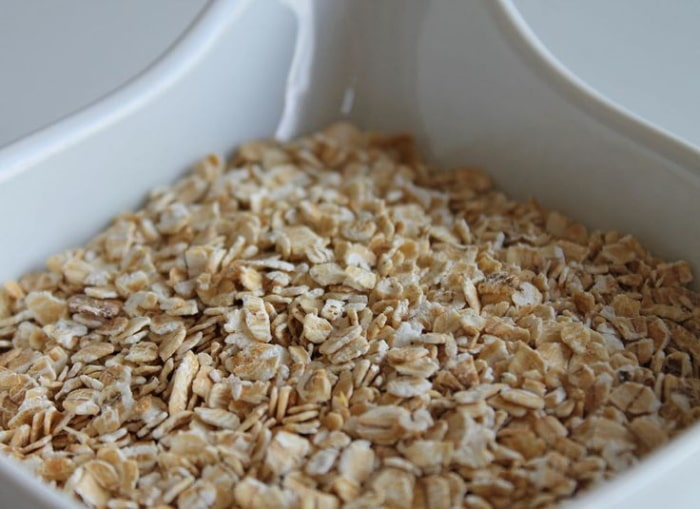
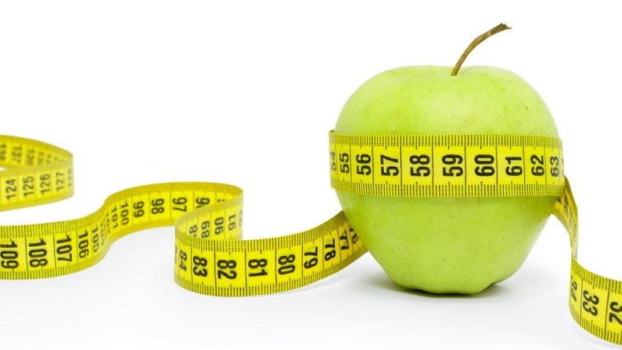
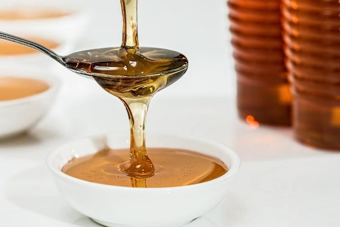
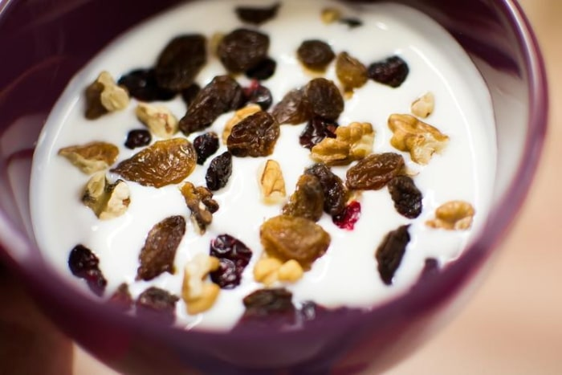

Fettverbrennung und die damit verbundene Gewichtsreduzierung haben nicht nur mit Bewegung, sondern auch mit Ernährung zu tun. Es gibt jede Menge leckere Lebensmittel, die Deinen Körper dabei unterstützen, die Fettverbrennung anzukurbeln. Diese bezeichnet man als natürliche Fatburner bzw. natürliche Fettverbrenner. Das bedeutet jedoch nicht, dass diese Lebensmittel einzig und allein für purzelnde Pfunde verantwortlich sein werden. Solche Fettverbrenner-Lebensmittel wirken sich positiv aus, indem sie den Stoffwechsel anregen. Du wirst mehr Energie verbrauchen, als Du durch dieses Nahrungsmittel aufnimmst. Das führt dann letztendlich auch zur Gewichtsabnahme. Grundsätzlich bleibt festzuhalten, dass der Körper bei der Verdauung von eiweißreichen Nahrungsmitteln mehr Energie benötigt als für Kohlehydrate und Fette. Das wirkt sich positiv auf Ihre Energiebilanz aus.
Nachstehend eine Auswahl an natürlichen Lebensmitteln, welche den Stoffwechsel und die Fettverbrennung ankurbeln.

Ingwer ist bestens geeignet, Muskelmasse auf- und Fett abzubauen. Schon geringe Mengen genügen. Das im Ingwer enthaltene Capaisicin sorgt für eine bessere Durchblutung, erhöht die Milchsäureproduktion und wirkt als natürlicher Fatburner. Die Gallensaft-Produktion wird angekurbelt, die Fettverdauung wird erleichtert.

Ingwer ist bestens geeignet, Muskelmasse auf- und Fett abzubauen. Schon geringe Mengen genügen. Das im Ingwer enthaltene Capaisicin sorgt für eine bessere Durchblutung, erhöht die Milchsäureproduktion und wirkt als natürlicher Fatburner. Die Gallensaft-Produktion wird angekurbelt, die Fettverdauung wird erleichtert.

Avocados sind sehr fetthaltig, punkten aber mit gesunden einfach ungesättigten Fettsäuren. Die in der Avocado enthaltene Aminosäure L-Carnitin hilft dabei, die Fettverbrennung in der Leber anzukurbeln.

Der hohe Eiweißgehalt bringt die Fettverbrennung in Schwung. Eier enthalten viele lebensnotwendige Inhaltsstoffe. Als Fatburner-Lebensmittel sind sie daher ideal und erleichtern das Abnehmen.

Lachs enthält nicht nur gute Fette (Omega 3-Fettsäuren), sondern auch jede Menge Eiweiß und ist deshalb bestens als natürlicher Fatburner geeignet.

Brokkoli gehört zu den vitalstoffreichsten Gemüsesorten. Die vielen unterschiedlichen Mineralstoffe und Vitamine sind für den Fettabbau unverzichtbar.

Brauner Reis ist ungeschält. Durch die vielen Ballaststoffe beugt er unter anderem auch Blutzuckerschwankungen vor.
Spargel hat den wunderbaren Nebeneffekt, dass 100 Gramm mit gerade einmal 16 kcal äußerst kalorienarm ist. Er ist reich an Pflanzenfasern und Folsäure. Nach dem Spargelgenuss wird Wasser schneller aus dem Körper geschwemmt.

Haferflocken sättigen schon in kleinen Mengen sehr gut. Zudem enthalten Sie B-Vitamine, Eisen und lösliche Ballaststoffe. Ob zarte oder lieber kernige Flocken ist für positive Wirkung nicht entscheidend.
Die Scharfstoffe im Chili wie auch in Paprika und Pfeffer regen die Bildung wertvoller Enzyme an, die für die Verdauung wichtig sind. Dadurch werden Magen und Darm aktiv, die Fettverbrennung kommt schneller in Gang.
Nicht nur die Grapefruit, alle Zitrusfrüchte strotzen vor Vitamin C, einem absoluten Fettverbrenner. Außerdem sind sie reich an verdaulichen Fasern (insbesondere Orangen).

Äpfel haben ebenso wie Haferflocken die positive Eigenschaft, gut zu sättigen. Das haben die Äpfel dem Pektin zu verdanken. Vor allem als Zwischenmahlzeit ist ein Apfel immer eine gute Wahl.

Das Naturprodukt ist vollgepackt mit wertvollen Inhaltsstoffen. Enzyme, Vitamine und Flavonoide beeinflussen den Blutzuckerspiegel positiv. Aufgrund der niedrigeren Insulinausschüttung hält das Sättigungsgefühl für viele Stunden an, Heißhungerattacken bleiben aus. Positiver Nebeneffekt: Trotz lang anhaltendem Sättigungsgefühl bleibt die Fettverbrennung weiter aktiv.

Beeren enthalten jede Menge Quellstoffe, die im Magen aufquellen und so für eine lang anhaltende Sättigung sorgen.

Der Joghurt liefert wertvolle Probiotika, die die Darmfunktion (und auch die Darmflora) verbessern und ist eine gute Hilfe als Lebensmittel zum Abnehmen.